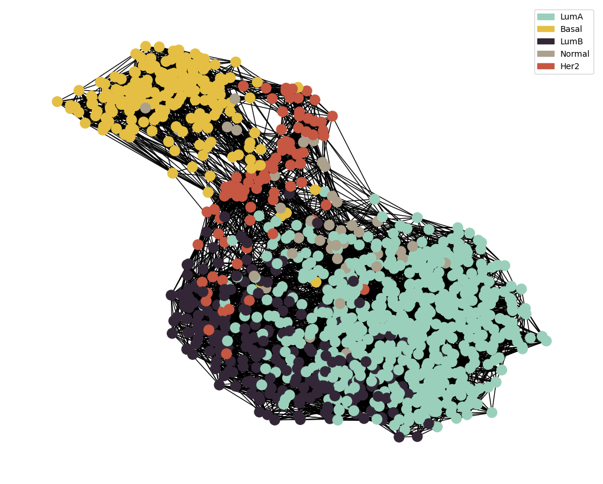

Similarity Network Fusion
This notebook is a demonstration of how to integrate select modalities for training with MOGDx
# Importing the libraries
import pandas as pd
import numpy as np
import itertools
import networkx as nx
import pickle
import matplotlib.pyplot as plt
import matplotlib.patches as mpatches
from palettable import wesanderson
import sys
sys.path.insert(0 , './../MAIN/')
from utils import *
import preprocess_functions
# Specify modalities and parameters
modalities = ['mRNA' ,'RPPA']
index_col = 'index'
target = 'paper_BRCA_Subtype_PAM50'
# Load networks and perform SNF
# Load networks
all_graphs = {}
all_idx = []
for i , mod in enumerate(modalities) :
with open(f'./../../../../data/raw/{mod}_processed.pkl', 'rb') as file:
loaded_data = pickle.load(file)
if i == 0 :
datMeta = loaded_data['datMeta'].reset_index()
else :
datMeta = pd.merge(datMeta , loaded_data['datMeta'].reset_index() , how = 'outer' , on = [index_col , target])
all_graphs[mod] = nx.read_graphml(f'./../../../../data/Networks/{mod}_graph.graphml')
all_idx.extend(list(all_graphs[mod].nodes))
# Merge metadata and create list of ids
datMeta = datMeta.set_index(index_col)
all_idx = list(set(all_idx))
full_graphs = []
# Create network for each modality including patients wtihout data
for mod , graph in all_graphs.items() :
full_graph = pd.DataFrame(data = np.zeros((len(all_idx) , len(all_idx))) , index=all_idx , columns=all_idx)
graph = nx.to_pandas_adjacency(graph)
full_graph.loc[graph.index , graph.index] = graph.values
full_graphs.append(full_graph)
# Perform SNF
adj_snf = preprocess_functions.SNF(full_graphs , K=15 , t=10)
node_labels = pd.Series(adj_snf.index)
node_colour = datMeta.loc[adj_snf.index][target].astype('category').cat.set_categories(wesanderson.FantasticFox2_5.hex_colors , rename=True)
G = preprocess_functions.plot_knn_network(adj_snf , 15 , datMeta.loc[adj_snf.index][target] ,
node_colours=node_colour , node_size=150)
snf_name = '_'.join(modalities)
nx.write_graphml(G, f'./../../../../data/Networks/{snf_name}_graph.graphml')
